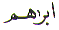
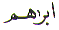

The Arabic letter
Alif ( ) is equivalent to the letter 'A'
in the English alphabet. It is the first letter in the Arabic
character set. Alif (
) is equivalent to the letter 'A'
in the English alphabet. It is the first letter in the Arabic
character set. Alif ( ) in Arabic numerology
which is known as Abjad, it is also the first letter and has the
value of 1. This article is about the spiritual meaning of the
letter Alif (
) in Arabic numerology
which is known as Abjad, it is also the first letter and has the
value of 1. This article is about the spiritual meaning of the
letter Alif ( ).
).
Alif ( )
is the first letter in the Name Allah
)
is the first letter in the Name Allah  .
Everything is Created by Allah, and so everything begins in the
Name of Allah Most Gracious
Most Merciful. Because
Allah is Ahad - One, His Name, which is Ism Zaat - Personal Name, Starts with the Letter Alif (
.
Everything is Created by Allah, and so everything begins in the
Name of Allah Most Gracious
Most Merciful. Because
Allah is Ahad - One, His Name, which is Ism Zaat - Personal Name, Starts with the Letter Alif ( ) which has a numerical value of
1.
) which has a numerical value of
1.
When Allah Creates, there is no change in Him. He is as He was. Because of Allah's Existence, everything else exists. Nothing can exist without Allah's Existence.
To show a crude example:
0 - 0 = 0 = Nothing = No existence without '1'
0 + 0 = 0 = Nothing = No existence without '1'
1 - 0 = 1 = No change in '1'
1 + 0 = 1 = No change in '1'
Allah Named Himself Allah. He is Allah the One. Allah's Ism Zaat is Allah and not ilaha god. Why is that ? Why did Allah Name Himself Allah ?
The name Allah is Special. Allah is the one Name that has been openly shown in the Quran with all the Glory. If we start with the Name Allah as follows:
Allah  and take away the
first letter which is Alif (
and take away the
first letter which is Alif ( )
we arrive at:
)
we arrive at:
Lillah If we now take away
the first Laam ( ) from Lillah we
arrive at:
) from Lillah we
arrive at:
Lahu If we now take away
the next Laam ( ) from Lahu we arrive
at:
) from Lahu we arrive
at:
Hu which is essentially

In each of the above instances we are referring to Allah and no one else. Then how can we say that god is the translation of the NAME ALLAH ?
No one can justify substituting
the word god wherever the Name Allah is used in the Quran. The
Name Allah must be left alone as the Name ALLAH
in all translations regardless of language. As stated in the article
on the Letter Ha ( ) in the section
Asma ul Husna the sound of the Letters is very
important. If we say "God", we make a different sound to the
one when we say "Allah". Which sound would Allah
Himself Like to Hear ? After
all Allah is the One who is Samee
ud Dua the Hearer of
prayer.
) in the section
Asma ul Husna the sound of the Letters is very
important. If we say "God", we make a different sound to the
one when we say "Allah". Which sound would Allah
Himself Like to Hear ? After
all Allah is the One who is Samee
ud Dua the Hearer of
prayer.
Iman is belief. Muslims are required to believe. Believe what ?
We have to believe in Allah because we have already agreed with Him that He is our Rabb ! That was in our spirit state. So how can we now deny that Allah exists now that we have hidden ourselves behind a physical body ?

When Allah created our
spirits He said Alastu
Bi Rabbi Kum -
Am I not your Rabb ? We all answered Balaa
Yes. Notice the first question
that Allah asked us starts with the Letter Alif ( ). The first words we spoke start
with the Letter Ba (
). The first words we spoke start
with the Letter Ba ( ).
).
Those who believe in Allah, His angels, His books, His Rasools are Muslims. The religion chosen by Allah for a believer is Islam.
The beauty of the above
verse is that it occurs in the first chapter with the name starting
with the Letter Meem ( ) - Maida. The word Islam starts
with an Alif (
) - Maida. The word Islam starts
with an Alif ( ) and finishes
on Meem (
) and finishes
on Meem ( ). The Deen religion
of Islam is perfected for Allah's Beloved
Muhammad
). The Deen religion
of Islam is perfected for Allah's Beloved
Muhammad  and his community - Muslims.
And speaking of our Master Muhammad
and his community - Muslims.
And speaking of our Master Muhammad  ,
he is the direct the descendant of Ibraheem (
,
he is the direct the descendant of Ibraheem ( )
.
)
.
Ibraheem ( ) is the only Messenger of Allah
whose name has been spelt in two different ways in the Quran.
Initially the name is spelt  Ibrahim
(
) is the only Messenger of Allah
whose name has been spelt in two different ways in the Quran.
Initially the name is spelt  Ibrahim
( ) then the spellings change to Ibraheem
(
) then the spellings change to Ibraheem
( ). Why ?
). Why ?
Initially Ibraheem ( ) was seeking the Truth. He was
seeking knowledge. He found the Truth. Then he asked Allah to
show him how Allah gives life. Allah showed him how. Allah bestowed
knowledge (
) was seeking the Truth. He was
seeking knowledge. He found the Truth. Then he asked Allah to
show him how Allah gives life. Allah showed him how. Allah bestowed
knowledge ( ) on Ibraheem (
) on Ibraheem ( ).
).
Islam is the religion
of Ibraheem ( ) that has been perfected by the arrival of Muhammad
) that has been perfected by the arrival of Muhammad in this world. How was Islam perfected ?
in this world. How was Islam perfected ?
Jibreel ( ) appeared in the cave Hira and
said Iqraa - Read. The first Letter uttered
by Jibreel was Alif (
) appeared in the cave Hira and
said Iqraa - Read. The first Letter uttered
by Jibreel was Alif ( )
in the word
)
in the word  Iqraa -
Read.
Iqraa -
Read.
Muhammad  replied:
Ma ana bi qaree "I do not know how to read."
The first Letter uttered by Muhammad
replied:
Ma ana bi qaree "I do not know how to read."
The first Letter uttered by Muhammad  was
Meem (
was
Meem ( ). And Islam
is somewhere between Alif (
). And Islam
is somewhere between Alif ( ) and Meem (
) and Meem ( ).
That is Islam begins from Alif (
).
That is Islam begins from Alif ( ) and completes on Meem (
) and completes on Meem ( ).
).
Another way of looking
at this is that Ibraheem ( ) was on the religion of Islam.
Muhammad
) was on the religion of Islam.
Muhammad  is the direct descendant of Ibraheem
(
is the direct descendant of Ibraheem
( ). With Muhammad
). With Muhammad being
the Seal of Messengers, the religion of Islam had to start with
Alif (
being
the Seal of Messengers, the religion of Islam had to start with
Alif ( ) and finish on Meem (
) and finish on Meem ( ). Ibraheem (
). Ibraheem ( ) built the Kaaba in Makkah as the
first house and Muhammad
) built the Kaaba in Makkah as the
first house and Muhammad  restored
it by removing all the idols from it.
restored
it by removing all the idols from it.
The perfection of Islam has been recorded in the Quran. The Quran is the perfection. The Quran is packed with Verses or Signs or Ayats . Why are the verses referred to as Ayats ?
The entire Quran is from
Allah ( ) full of Knowledge (
) full of Knowledge ( ). The Letter Ya (
). The Letter Ya ( )
leads us back to the Letter Alif (
)
leads us back to the Letter Alif ( )
as it was stated in the Book on the Letter Ya (
)
as it was stated in the Book on the Letter Ya ( ).
).
We must do Tawba ( ) repent or turn
back and find Hu (
) repent or turn
back and find Hu ( ) and Hu is Allah
(
) and Hu is Allah
( ) !
) !
Every Ayat in
the Quran is perfect. Since Islam has been perfected by Allah
there is no room for another Messenger after Muhammad  .
.
Allah is the Awwal First and He is the Akhir Last . The First existence
was that of Allah and there was nothing with Him. In the end there
will be Allah and there will be nothing with Him. And as Hadrat
Ali Karam Ullah said: "This moment is that very moment".
. The First existence
was that of Allah and there was nothing with Him. In the end there
will be Allah and there will be nothing with Him. And as Hadrat
Ali Karam Ullah said: "This moment is that very moment".
May Allah have Mercy on us all. Ameen.
| BACK |